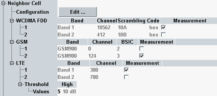
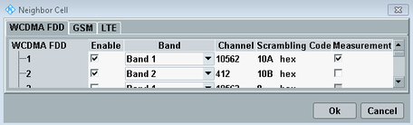

This section defines neighbor cell information to be broadcast to the UE. For each radio access technology, you can define several neighbor cell entries. The signaling messages for broadcast of neighbor cell information are defined in 3GPP TS 25.331.

To configure the neighbor cell entries, press the "Edit" button. The configuration dialog contains one tab per technology. Only the enabled entries are broadcast. The evaluation and display of the individual information elements included in the UE measurement report message can be enabled or disabled for each neighbor cell (see also "UE Measurement Report Settings").

For a WCDMA neighbor cell entry, you can specify the operating band, the downlink channel number and the primary scrambling code of the cell.
Remote command:For a GSM neighbor cell entry, you can specify the operating band, BSIC and the channel number used for the broadcast control channel (BCCH).
Different BSIC configurations enable neighbor cell measurements on several neighbor cells with the same channel number.
Remote command:For an LTE neighbor cell entry, you can specify the operating band and the downlink channel number.
Remote command:The configured "High" reselection threshold value is written into the system information block element "threshXhigh" defined in 3GPP TS 25.331. The resulting threshold value in dB is displayed for information.
Remote command: